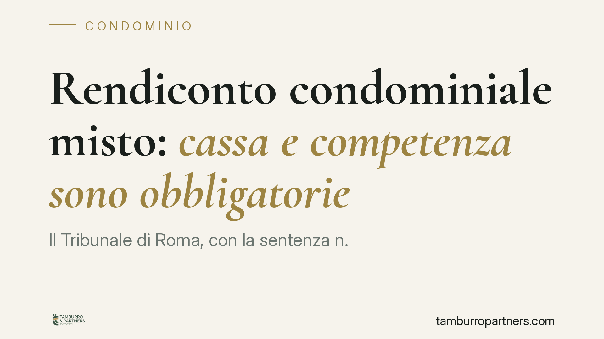

Rendiconto condominiale misto: cassa e competenza sono obbligatorie
Il Tribunale di Roma, con la sentenza n. 5527/2026, conferma l'orientamento della Cassazione: il rendiconto condominiale non può essere redatto solo per cassa, ma deve adottare un criterio misto cassa/competenza. Lo stato patrimoniale deve riportare debiti e crediti maturati. Una pronuncia che incide sul lavoro degli amministratori e sui diritti dei condòmini al controllo contabile.

Il caso
Una condomina impugna il rendiconto approvato dall'assemblea, contestando che l'amministratore avesse registrato solo le somme effettivamente incassate e pagate nell'esercizio, senza dare conto dei crediti e dei debiti maturati ma non ancora movimentati.
Il Tribunale di Roma (sent. n. 5527/2026), allineandosi alla Cassazione (sent. n. 25446/2025), ha chiarito che questa impostazione — il cosiddetto "criterio di cassa puro" — non è più ammessa. Il rendiconto deve seguire un criterio misto: registra i flussi di denaro effettivi (cassa) e, allo stesso tempo, evidenzia le posizioni creditorie e debitorie di competenza del periodo.
Inquadramento normativo
Il riferimento è l'art. 1130 del Codice civile, come riformato dalla legge n. 220/2012. Il n. 10 impone all'amministratore di redigere il rendiconto annuale e di convocare l'assemblea per l'approvazione. La norma precisa che il rendiconto si compone di tre parti: il registro di contabilità, il riepilogo finanziario e la nota sintetica esplicativa della gestione.
È proprio da questa articolazione che discende l'obbligo di includere lo stato patrimoniale, inteso come fotografia delle situazioni attive e passive a fine esercizio. Il criterio di cassa, da solo, non consente di rappresentare i debiti verso i fornitori o i crediti verso i condòmini morosi: dati che incidono direttamente sulla reale situazione economica della gestione.
Un aspetto va chiarito sui termini: il criterio di cassa rileva le operazioni solo quando il denaro entra o esce materialmente; il criterio di competenza le imputa all'esercizio in cui sorgono, a prescindere dall'incasso o dal pagamento. Il "misto" combina i due, offrendo un quadro più fedele.
Quando la delibera è nulla
La sentenza introduce un criterio di equilibrio che merita attenzione. Non ogni irregolarità contabile rende nulla la delibera di approvazione. L'impugnazione ha esito favorevole solo quando il vizio comporti una grave alterazione della realtà contabile, tale da impedire al condòmino di comprendere l'effettiva situazione della gestione.
In mancanza di questa gravità, eventuali imperfezioni non travolgono la delibera. Resta fermo che l'impugnazione va proposta nei termini dell'art. 1137, comma 2, c.c.: trenta giorni, che per gli assenti decorrono dalla comunicazione del verbale.
Implicazioni pratiche
Per l'amministratore cambia il metodo di lavoro. Il rendiconto costruito "a saldo di cassa" espone a contestazioni e, nei casi più seri, all'annullamento della delibera. Occorre tenere traccia puntuale delle partite aperte: fatture ricevute e non pagate, quote deliberate e non versate, anticipazioni, fondi.
Per il condòmino, la pronuncia rafforza il diritto a un controllo effettivo. Un rendiconto che evidenzia crediti e debiti permette di individuare morosità, verificare la congruità del fondo cassa e valutare la gestione prima di approvarla.
Resta però un limite da non sottovalutare: la soglia della "grave alterazione" scoraggia le impugnazioni meramente formali. Contestare un rendiconto per vizi minori, senza dimostrare che falsino la rappresentazione contabile, difficilmente porterà all'annullamento e può esporre a una condanna alle spese.
Cosa fare in concreto
- Amministratori: predisponete il rendiconto con stato patrimoniale aggiornato, indicando separatamente crediti verso condòmini e debiti verso fornitori.
- Amministratori: conservate la documentazione di supporto (fatture, estratti conto, solleciti), così da giustificare ogni posta anche a esercizio chiuso.
- Condòmini: prima dell'assemblea, esaminate il riepilogo finanziario e verificate che le partite aperte siano riportate.
- Condòmini che intendono impugnare: valutate se l'irregolarità configura una "grave alterazione" effettiva e rispettate il termine di trenta giorni dell'art. 1137 c.c.
- In caso di dubbio: consigliamo di far esaminare il rendiconto da un professionista prima di promuovere o resistere a un'impugnazione.
---
*Contributo informativo a cura di Tamburro & Partners - Avv. Giuseppe Tamburro. Non costituisce parere legale.*
Ogni condominio ha una storia a sé.
Se gestisci un'amministrazione e vuoi un confronto su una specifica questione condominiale, scrivi allo studio. Ti rispondiamo entro un giorno lavorativo.